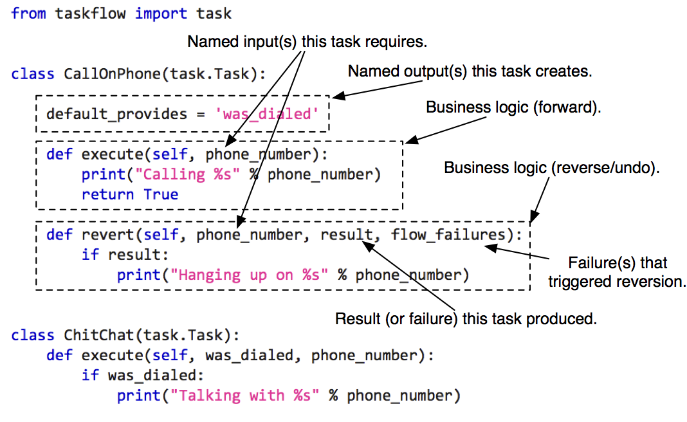
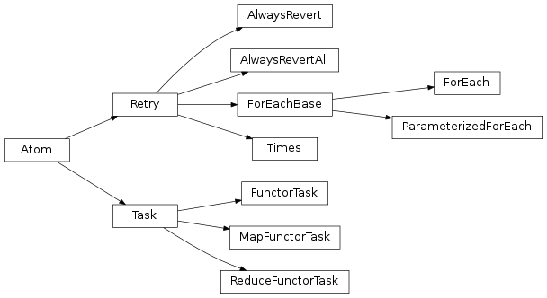

Atoms, tasks and retries¶
Atom¶
An atom is the smallest unit in TaskFlow which
acts as the base for other classes (its naming was inspired from the
similarities between this type and atoms in the physical world). Atoms
have a name and may have a version. An atom is expected to name desired input
values (requirements) and name outputs (provided values).
Note
For more details about atom inputs and outputs please visit arguments and results.
-
class
taskflow.atom.Atom(name=None, provides=None, requires=None, auto_extract=True, rebind=None, inject=None, ignore_list=None, revert_rebind=None, revert_requires=None)[source]¶ Bases:
objectAn unit of work that causes a flow to progress (in some manner).
An atom is a named object that operates with input data to perform some action that furthers the overall flows progress. It usually also produces some of its own named output as a result of this process.
Parameters: - name – Meaningful name for this atom, should be something that is distinguishable and understandable for notification, debugging, storing and any other similar purposes.
- provides – A set, string or list of items that this will be providing (or could provide) to others, used to correlate and associate the thing/s this atom produces, if it produces anything at all.
- inject – An immutable input_name => value dictionary which specifies any initial inputs that should be automatically injected into the atoms scope before the atom execution commences (this allows for providing atom local values that do not need to be provided by other atoms/dependents).
- rebind – A dict of key/value pairs used to define argument
name conversions for inputs to this atom’s
executemethod. - revert_rebind – The same as
rebindbut for therevertmethod. If unpassed,rebindwill be used instead. - requires – A set or list of required inputs for this atom’s
executemethod. - revert_requires – A set or list of required inputs for this atom’s
revertmethod. If unpassed,`requireswill be used.
Variables: - version – An immutable version that associates version information with this atom. It can be useful in resuming older versions of atoms. Standard major, minor versioning concepts should apply.
- save_as – An immutable output
resourcenameOrderedDictthis atom produces that other atoms may depend on this atom providing. The format is output index (or key when a dictionary is returned from the execute method) to stored argument name. - rebind – An immutable input
resourceOrderedDictthat can be used to alter the inputs given to this atom. It is typically used for mapping a prior atoms output into the names that this atom expects (in a way this is like remapping a namespace of another atom into the namespace of this atom). - revert_rebind – The same as
rebindbut for the revert method. This should only differ fromrebindif therevertmethod has a different signature fromexecuteor a differentrevert_rebindvalue was received. - inject – See parameter
inject. - name – See parameter
name. - requires – A
OrderedSetof inputs this atom requires to function. - optional – A
OrderedSetof inputs that are optional for this atom toexecute. - revert_optional – The
revertversion ofoptional. - provides – A
OrderedSetof outputs this atom produces.
-
priority= 0¶ A numeric priority that instances of this class will have when running, used when there are multiple parallel candidates to execute and/or revert. During this situation the candidate list will be stably sorted based on this priority attribute which will result in atoms with higher priorities executing (or reverting) before atoms with lower priorities (higher being defined as a number bigger, or greater tha an atom with a lower priority number). By default all atoms have the same priority (zero).
For example when the following is combined into a graph (where each node in the denoted graph is some task):
a -> b b -> c b -> e b -> f
When
bfinishes there will then be three candidates that can run(c, e, f)and they may run in any order. What this priority does is sort those three by their priority before submitting them to be worked on (so that instead of say a random run order they will now be ran by there sorted order). This is also true when reverting (in that the sort order of the potential nodes will be used to determine the submission order).
-
pre_execute()[source]¶ Code to be run prior to executing the atom.
A common pattern for initializing the state of the system prior to running atoms is to define some code in a base class that all your atoms inherit from. In that class, you can define a
pre_executemethod and it will always be invoked just prior to your atoms running.
-
execute(*args, **kwargs)[source]¶ Activate a given atom which will perform some operation and return.
This method can be used to perform an action on a given set of input requirements (passed in via
*argsand**kwargs) to accomplish some type of operation. This operation may provide some named outputs/results as a result of it executing for later reverting (or for other atoms to depend on).NOTE(harlowja): the result (if any) that is returned should be persistable so that it can be passed back into this atom if reverting is triggered (especially in the case where reverting happens in a different python process or on a remote machine) and so that the result can be transmitted to other atoms (which may be local or remote).
Parameters: - args – positional arguments that atom requires to execute.
- kwargs – any keyword arguments that atom requires to execute.
-
post_execute()[source]¶ Code to be run after executing the atom.
A common pattern for cleaning up global state of the system after the execution of atoms is to define some code in a base class that all your atoms inherit from. In that class, you can define a
post_executemethod and it will always be invoked just after your atoms execute, regardless of whether they succeeded or not.This pattern is useful if you have global shared database sessions that need to be cleaned up, for example.
-
pre_revert()[source]¶ Code to be run prior to reverting the atom.
This works the same as
pre_execute(), but for the revert phase.
-
revert(*args, **kwargs)[source]¶ Revert this atom.
This method should undo any side-effects caused by previous execution of the atom using the result of the
execute()method and information on the failure which triggered reversion of the flow the atom is contained in (if applicable).Parameters: - args – positional arguments that the atom required to execute.
- kwargs – any keyword arguments that the atom required to
execute; the special key
'result'will contain theexecute()result (if any) and the**kwargskey'flow_failures'will contain any failure information.
-
post_revert()[source]¶ Code to be run after reverting the atom.
This works the same as
post_execute(), but for the revert phase.
Task¶
A task (derived from an atom) is a
unit of work that can have an execute & rollback sequence associated with
it (they are nearly analogous to functions). Your task objects should all
derive from Task which defines what a task must
provide in terms of properties and methods.
For example:
{kind=link}
Currently the following provided types of task subclasses are:
Task: useful for inheriting from and creating your own subclasses.FunctorTask: useful for wrapping existing functions into task objects.
Note
FunctorTask task types can not currently be used
with the worker based engine due to the fact that
arbitrary functions can not be guaranteed to be correctly
located (especially if they are lambda or anonymous functions) on the
worker nodes.
Retry¶
A retry (derived from an atom) is a special
unit of work that handles errors, controls flow execution and can (for
example) retry other atoms with other parameters if needed. When an associated
atom fails, these retry units are consulted to determine what the resolution
strategy should be. The goal is that with this consultation the retry atom
will suggest a strategy for getting around the failure (perhaps by retrying,
reverting a single atom, or reverting everything contained in the retries
associated scope).
Currently derivatives of the retry base
class must provide a on_failure() method to
determine how a failure should be handled. The current enumeration(s) that can
be returned from the on_failure() method
are defined in an enumeration class described here:
-
class
taskflow.retry.Decision[source]¶ Bases:
taskflow.utils.misc.StrEnumDecision results/strategy enumeration.
-
REVERT= <Decision.REVERT: 'REVERT'>¶ Reverts only the surrounding/associated subflow.
This strategy first consults the parent atom before reverting the associated subflow to determine if the parent retry object provides a different reconciliation strategy. This allows for safe nesting of flows with different retry strategies.
If the parent flow has no retry strategy, the default behavior is to just revert the atoms in the associated subflow. This is generally not the desired behavior, but is left as the default in order to keep backwards-compatibility. The
defer_revertsengine option will let you change this behavior. If that is set to True, a REVERT will always defer to the parent, meaning that if the parent has no retry strategy, it will be reverted as well.
-
REVERT_ALL= <Decision.REVERT_ALL: 'REVERT_ALL'>¶ Reverts the entire flow, regardless of parent strategy.
This strategy will revert every atom that has executed thus far, regardless of whether the parent flow has a separate retry strategy associated with it.
-
RETRY= <Decision.RETRY: 'RETRY'>¶ Retries the surrounding/associated subflow again.
-
To aid in the reconciliation process the
retry base class also mandates
execute()
and revert() methods (although subclasses
are allowed to define these methods as no-ops) that can be used by a retry
atom to interact with the runtime execution model (for example, to track the
number of times it has been called which is useful for
the ForEach retry subclass).
To avoid recreating common retry patterns the following provided retry subclasses are provided:
AlwaysRevert: Always reverts subflow.AlwaysRevertAll: Always reverts the whole flow.Times: Retries subflow given number of times.ForEach: Allows for providing different values to subflow atoms each time a failure occurs (making it possibly to resolve the failure by altering subflow atoms inputs).ParameterizedForEach: Same asForEachbut extracts values from storage instead of theForEachconstructor.
Note
They are similar to exception handlers but are made to be more capable due to their ability to dynamically choose a reconciliation strategy, which allows for these atoms to influence subsequent execution(s) and the inputs any associated atoms require.
Area of influence¶
Each retry atom is associated with a flow and it can influence how the atoms (or nested flows) contained in that flow retry or revert (using the previously mentioned patterns and decision enumerations):
For example:
{kind=link}
In this diagram retry controller (1) will be consulted if task A, B
or C fail and retry controller (2) decides to delegate its retry decision
to retry controller (1). If retry controller (2) does not decide to
delegate its retry decision to retry controller (1) then retry
controller (1) will be oblivious of any decisions. If any of
task 1, 2 or 3 fail then only retry controller (1) will be
consulted to determine the strategy/pattern to apply to resolve there
associated failure.
Usage examples¶
>>> class EchoTask(task.Task):
... def execute(self, *args, **kwargs):
... print(self.name)
... print(args)
... print(kwargs)
...
>>> flow = linear_flow.Flow('f1').add(
... EchoTask('t1'),
... linear_flow.Flow('f2', retry=retry.ForEach(values=['a', 'b', 'c'], name='r1', provides='value')).add(
... EchoTask('t2'),
... EchoTask('t3', requires='value')),
... EchoTask('t4'))
In this example the flow f2 has a retry controller r1, that is an
instance of the default retry controller ForEach,
it accepts a collection of values and iterates over this collection when
each failure occurs. On each run ForEach retry
returns the next value from the collection and stops retrying a subflow if
there are no more values left in the collection. For example if tasks t2 or
t3 fail, then the flow f2 will be reverted and retry r1 will retry
it with the next value from the given collection ['a', 'b', 'c']. But if
the task t1 or the task t4 fails, r1 won’t retry a flow, because
tasks t1 and t4 are in the flow f1 and don’t depend on
retry r1 (so they will not consult r1 on failure).
>>> class SendMessage(task.Task):
... def execute(self, message):
... print("Sending message: %s" % message)
...
>>> flow = linear_flow.Flow('send_message', retry=retry.Times(5)).add(
... SendMessage('sender'))
In this example the send_message flow will try to execute the
SendMessage five times when it fails. When it fails for the sixth time (if
it does) the task will be asked to REVERT (in this example task reverting
does not cause anything to happen but in other use cases it could).
>>> class ConnectToServer(task.Task):
... def execute(self, ip):
... print("Connecting to %s" % ip)
...
>>> server_ips = ['192.168.1.1', '192.168.1.2', '192.168.1.3' ]
>>> flow = linear_flow.Flow('send_message',
... retry=retry.ParameterizedForEach(rebind={'values': 'server_ips'},
... provides='ip')).add(
... ConnectToServer(requires=['ip']))
In this example the flow tries to connect a server using a list (a tuple can also be used) of possible IP addresses. Each time the retry will return one IP from the list. In case of a failure it will return the next one until it reaches the last one, then the flow will be reverted.
Interfaces¶
-
class
taskflow.task.Task(name=None, provides=None, requires=None, auto_extract=True, rebind=None, inject=None, ignore_list=None, revert_rebind=None, revert_requires=None)[source]¶ Bases:
taskflow.atom.AtomAn abstraction that defines a potential piece of work.
This potential piece of work is expected to be able to contain functionality that defines what can be executed to accomplish that work as well as a way of defining what can be executed to reverted/undo that same piece of work.
-
notifier¶ Internal notification dispatcher/registry.
A notification object that will dispatch events that occur related to internal notifications that the task internally emits to listeners (for example for progress status updates, telling others that a task has reached 50% completion...).
-
-
class
taskflow.task.FunctorTask(execute, name=None, provides=None, requires=None, auto_extract=True, rebind=None, revert=None, version=None, inject=None)[source]¶ Bases:
taskflow.task.TaskAdaptor to make a task from a callable.
Take any callable pair and make a task from it.
NOTE(harlowja): If a name is not provided the function/method name of the
executecallable will be used as the name instead (the name of therevertcallable is not used).
-
class
taskflow.task.ReduceFunctorTask(functor, requires, name=None, provides=None, auto_extract=True, rebind=None, inject=None)[source]¶ Bases:
taskflow.task.TaskGeneral purpose Task to reduce a list by applying a function.
This Task mimics the behavior of Python’s built-in
reducefunction. The Task takes a functor (lambda or otherwise) and a list. The list is specified using therequiresargument of the Task. When executed, this task callsreducewith the functor and list as arguments. The resulting value from the call toreduceis then returned after execution.
-
class
taskflow.task.MapFunctorTask(functor, requires, name=None, provides=None, auto_extract=True, rebind=None, inject=None)[source]¶ Bases:
taskflow.task.TaskGeneral purpose Task to map a function to a list.
This Task mimics the behavior of Python’s built-in
mapfunction. The Task takes a functor (lambda or otherwise) and a list. The list is specified using therequiresargument of the Task. When executed, this task callsmapwith the functor and list as arguments. The resulting list from the call tomapis then returned after execution.Each value of the returned list can be bound to individual names using the
providesargument, following taskflow standard behavior. Order is preserved in the returned list.
-
class
taskflow.retry.Retry(name=None, provides=None, requires=None, auto_extract=True, rebind=None)[source]¶ Bases:
taskflow.atom.AtomA class that can decide how to resolve execution failures.
This abstract base class is used to inherit from and provide different strategies that will be activated upon execution failures. Since a retry object is an atom it may also provide
execute()andrevert()methods to alter the inputs of connected atoms (depending on the desired strategy to be used this can be quite useful).NOTE(harlowja): the
execute()andrevert()andon_failure()will automatically be given ahistoryparameter, which contains information about the past decisions and outcomes that have occurred (if available).-
execute(history, *args, **kwargs)[source]¶ Executes the given retry.
This execution activates a given retry which will typically produce data required to start or restart a connected component using previously provided values and a
historyof prior failures from previous runs. The historical data can be analyzed to alter the resolution strategy that this retry controller will use.For example, a retry can provide the same values multiple times (after each run), the latest value or some other variation. Old values will be saved to the history of the retry atom automatically, that is a list of tuples (result, failures) are persisted where failures is a dictionary of failures indexed by task names and the result is the execution result returned by this retry during that failure resolution attempt.
Parameters: - args – positional arguments that retry requires to execute.
- kwargs – any keyword arguments that retry requires to execute.
-
revert(history, *args, **kwargs)[source]¶ Reverts this retry.
On revert call all results that had been provided by previous tries and all errors caused during reversion are provided. This method will be called only if a subflow must be reverted without the retry (that is to say that the controller has ran out of resolution options and has either given up resolution or has failed to handle a execution failure).
Parameters: - args – positional arguments that the retry required to execute.
- kwargs – any keyword arguments that the retry required to execute.
-
on_failure(history, *args, **kwargs)[source]¶ Makes a decision about the future.
This method will typically use information about prior failures (if this historical failure information is not available or was not persisted the provided history will be empty).
Returns a retry constant (one of):
RETRY: when the controlling flow must be reverted and restarted again (for example with new parameters).REVERT: when this controlling flow must be completely reverted and the parent flow (if any) should make a decision about further flow execution.REVERT_ALL: when this controlling flow and the parent flow (if any) must be reverted and marked as aFAILURE.
-
-
class
taskflow.retry.History(contents, failure=None)[source]¶ Bases:
objectHelper that simplifies interactions with retry historical contents.
-
failure¶ Returns the retries own failure or none if not existent.
-
outcomes_iter(index=None)[source]¶ Iterates over the contained failure outcomes.
If the index is not provided, then all outcomes are iterated over.
NOTE(harlowja): if the retry itself failed, this will not include those types of failures. Use the
failureattribute to access that instead (if it exists, aka, non-none).
-
caused_by(exception_cls, index=None, include_retry=False)[source]¶ Checks if the exception class provided caused the failures.
If the index is not provided, then all outcomes are iterated over.
- NOTE(harlowja): only if
include_retryis provided as true (defaults - to false) will the potential retries own failure be checked against as well.
- NOTE(harlowja): only if
-
-
class
taskflow.retry.AlwaysRevert(name=None, provides=None, requires=None, auto_extract=True, rebind=None)[source]¶ Bases:
taskflow.retry.RetryRetry that always reverts subflow.
-
class
taskflow.retry.AlwaysRevertAll(name=None, provides=None, requires=None, auto_extract=True, rebind=None)[source]¶ Bases:
taskflow.retry.RetryRetry that always reverts a whole flow.
-
class
taskflow.retry.Times(attempts=1, name=None, provides=None, requires=None, auto_extract=True, rebind=None, revert_all=False)[source]¶ Bases:
taskflow.retry.RetryRetries subflow given number of times. Returns attempt number.
Parameters: - attempts (int) – number of attempts to retry the associated subflow before giving up
- revert_all (bool) – when provided this will cause the full flow to revert when the number of attempts that have been tried has been reached (when false, it will only locally revert the associated subflow)
Further arguments are interpreted as defined in the
Atomconstructor.
-
class
taskflow.retry.ForEach(values, name=None, provides=None, requires=None, auto_extract=True, rebind=None, revert_all=False)[source]¶ Bases:
taskflow.retry.ForEachBaseApplies a statically provided collection of strategies.
Accepts a collection of decision strategies on construction and returns the next element of the collection on each try.
Parameters: - values (list) – values collection to iterate over and provide to
atoms other in the flow as a result of this functions
execute()method, which other dependent atoms can consume (for example, to alter their own behavior) - revert_all (bool) – when provided this will cause the full flow to revert when the number of attempts that have been tried has been reached (when false, it will only locally revert the associated subflow)
Further arguments are interpreted as defined in the
Atomconstructor.- values (list) – values collection to iterate over and provide to
atoms other in the flow as a result of this functions
-
class
taskflow.retry.ParameterizedForEach(name=None, provides=None, requires=None, auto_extract=True, rebind=None, revert_all=False)[source]¶ Bases:
taskflow.retry.ForEachBaseApplies a dynamically provided collection of strategies.
Accepts a collection of decision strategies from a predecessor (or from storage) as a parameter and returns the next element of that collection on each try.
Parameters: revert_all (bool) – when provided this will cause the full flow to revert when the number of attempts that have been tried has been reached (when false, it will only locally revert the associated subflow) Further arguments are interpreted as defined in the
Atomconstructor.
Hierarchy¶
